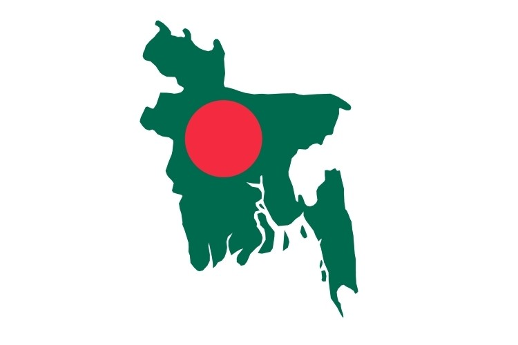

Web Designer:
A web designer is a person that makes the website looks good. They mainly refer to the splendiferous portion of the website as well as it’s usability. The main responsibility of Web Designers is to focus on the style and overall feel of the website using different software like Photoshop, Corel Draw.
Web Developer:
Web developers are generally called programmers. They take the design created by the web designers and convert it into a fully functioning website. They use different software and tools like Javascript, jQuery, Node.js, PHP, ASP.NET Python, etc
Bangladesh
Bangladesh shares land borders with India to the west, north, and east, and Myanmar to the southeast; to the south it has a coastline along the Bay of Bengal. It is narrowly separated from Bhutan and Nepal by the Siliguri Corridor; and from China by 100 km of the Indian state of Sikkim in the north.[16] Dhaka, the capital and largest city, is the nation's economic, political, and cultural hub.
